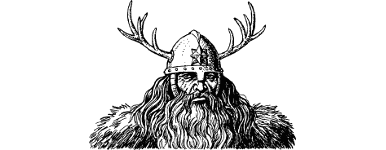

9
You call upon your Magnakai Discipline of Psi-screen to protect your mind from this psychic attack. The pain in your head lessens, yet your protection does not extend to Prince Karvas who is now on the verge of unconsciousness. You bring your horse around and ride to his aid. As you draw alongside, you pull him upright in the saddle and then, using your Magnakai Curing skills, you are able to revive him to full consciousness (use of this skill costs you 2 ENDURANCE points).
The terrible sound of the hunter’s horn ceases abruptly and you hear them galloping towards you. Their leader is a broad-shouldered man with a ginger beard and long wavy hair. His hair fans out from around the edges of a conical helm that is topped by a pair of polished antlers. He brings his horse to a halt before you and Prince Karvas and he regards your mounts with an appraising eye.
{kind=link}

‘I see you ride Cavalian colts,’ he says, and he points to the eagle brands that mark your horses’ hindquarters. You nod in acknowledgement but you do not offer any explanation. The man narrows his blue eyes and strokes his beard thoughtfully.
‘You do not know who I am, do you?’ You shake your head dumbly, hoping that he will take you for a simpleton and return to his deer hunting.
‘I am Halx—the Inquisitor-major of Cavalia. Among my many duties is the regulation and taxation of horses, mules, and oxen. You both ride Cavalian steeds, yet I do not recall seeing either of you in the city before. I trust your saddle taxes have been paid? Perhaps you would be kind enough to furnish your names and places of lodging so that, upon my return to Cavalia, I am able to confirm that this is so?’
You sense that your continued silence is beginning to irritate the Inquisitor-major. His followers are also growing impatient.
If you wish to say that you are special emissaries on your way to Seroa to witness the crowning of Baron Sadanzo, turn to 116.
If you wish to say that you are new recruits to the Cavalian Citadel Guard, turn to 123.